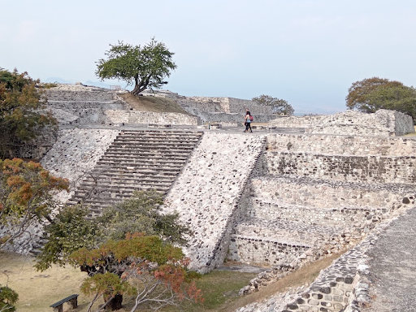
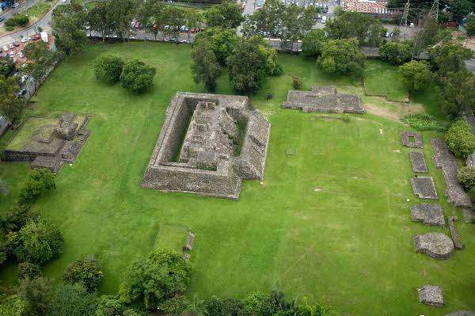
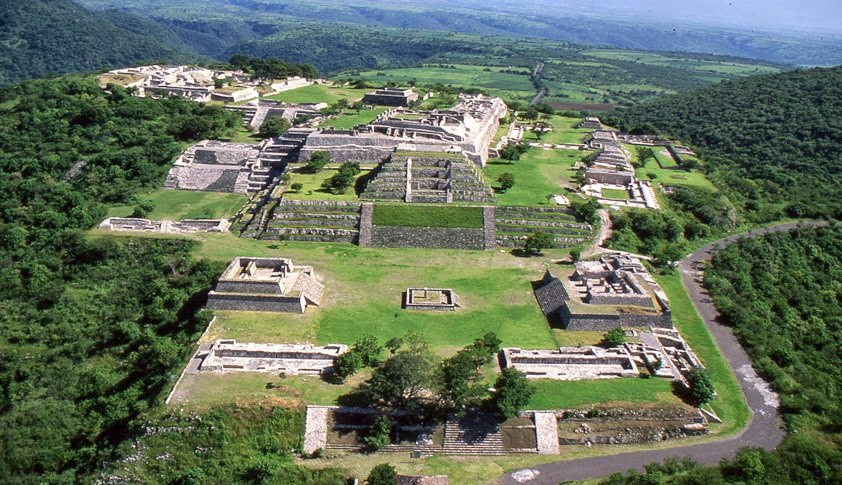
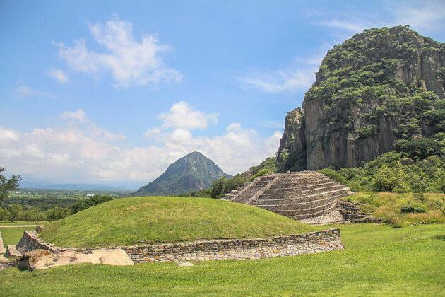

Zonas Arqueológicas en Morelos
Descubre el legado prehispánico de Morelos a través de sus zonas arqueológicas, ideales para conocer la historia, explorar ruinas ancestrales y admirar el paisaje.
Xochicalco
Ubicada en Miacatlán, es la zona más impresionante de Morelos. Con vestigios de influencia teotihuacana y zapoteca, se distingue por su observatorio, murales y la Pirámide de Quetzalcóatl.
Teopanzolco
Situada en Cuernavaca, esta pequeña pero significativa zona arqueológica permite entender la cultura tlahuica. Tiene una pirámide doble y vistas modernas de la ciudad.
Coatetelco
A orillas de una laguna, Coatetelco ofrece una experiencia única. Sus restos reflejan la influencia de Xochicalco y su entorno lo hace perfecto para un paseo tranquilo.
Chalcatzingo
Se trata de uno de los principales asentamientos que adoptaron aspectos de la cultura Olmeca y que se identifican fácilmente en la producción artística y arquitectónica.
